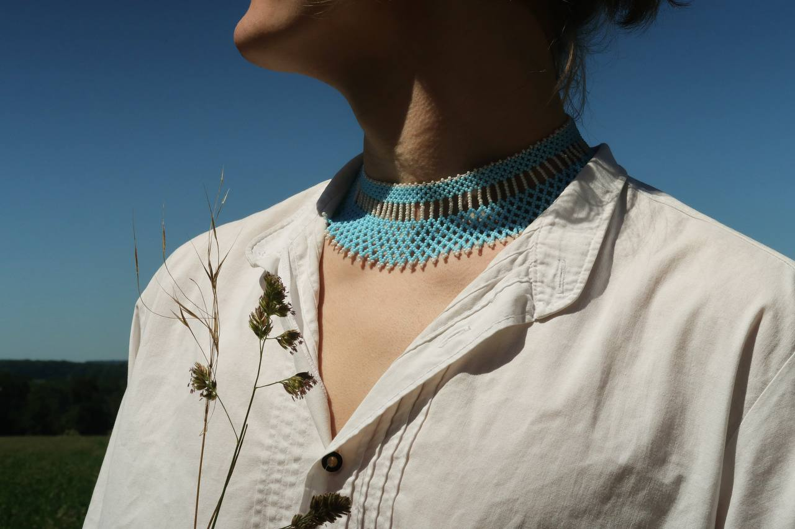
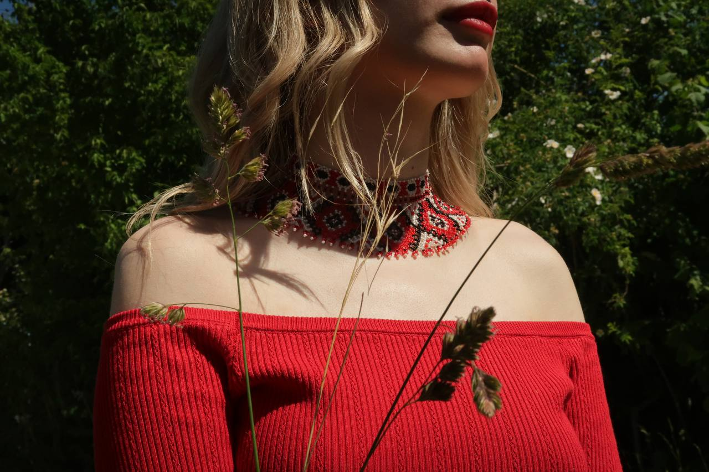

Traditioneller ukrainischer Sylanky-Schmuck – Handgefertigte Kostbarkeiten voller Geschichte
Entdecken Sie die einzigartige Schönheit und tiefe Bedeutung des ukrainischen Sylanky-Schmucks – ein echtes Symbol der Kultur und Handwerkskunst. Jede Sylanka ist ein kunstvoll gefertigtes Schmuckstück, das traditionell von ukrainischen Frauen getragen wird und weit mehr als nur ein Accessoire ist: Es ist ein Ausdruck von Identität, Stolz und Verbundenheit mit der Heimat.

Modell: Artur
Unsere Sylanky werden sorgfältig aus hochwertigen Materialien gefertigt und zeichnen sich durch ihre filigranen Muster, lebendigen Farben und symbolträchtigen Motive aus. Ob als Halskette, Armband oder Ohrring – jedes Stück erzählt eine Geschichte, die von Generation zu Generation weitergegeben wird. Warum Sylanky? Authentisch & traditionell: Handgefertigt nach jahrhundertealten Techniken Symbolisch & bedeutungsvoll: Jedes Muster trägt eine besondere Botschaft Vielfältig & individuell: Verschiedene Designs für jeden Stil und Anlass Perfektes Geschenk: Für Liebhaberinnen von Kultur, Geschichte und Handwerk Modell: Sonya
Tauchen Sie ein in die faszinierende Welt des ukrainischen Schmucks und tragen Sie ein Stück lebendige Tradition – zeitlos schön, voller Seele und mit Liebe gemacht.